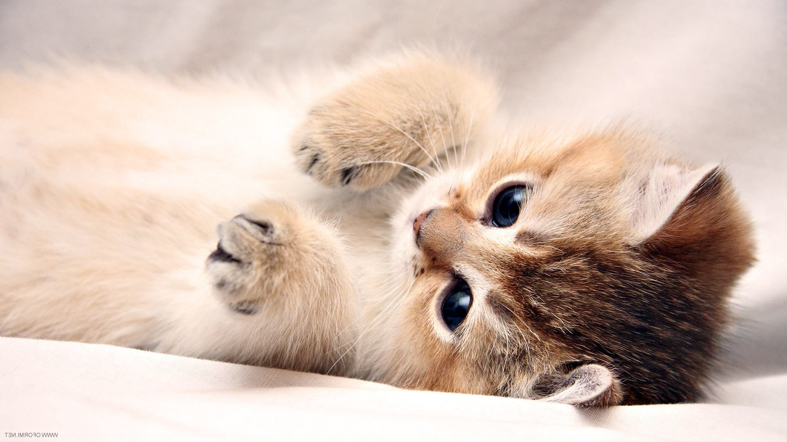

Kittens
Kittens Can’t See & Hear Fully Until 2-3 Weeks Old
- Scientific Name: Felis catus
- Whiskers: A Kitten’s Whiskers Are As Long As Their Bodies Are Wide
- Sleep: Kittens Sleep Around 18 Hours Per Day
- Sense of Smell: Kittens Have a Strong Sense of Smell
A kitten is a juvenile cat. After being born, kittens are totally dependent on their mother for survival and they do not normally open their eyes until after seven to ten days. After about two weeks, kittens quickly develop and begin to explore the world outside the nest. After a further three to four weeks, they begin to eat solid food and grow adult teeth. Domestic kittens are highly social animals and usually enjoy human companionship.